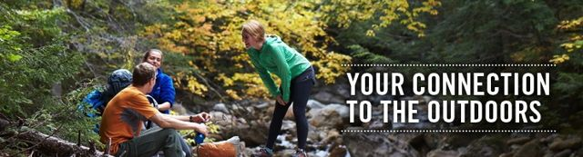
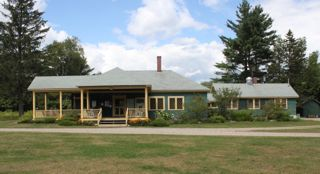
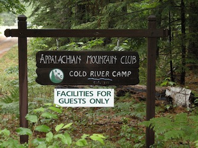

|
|
|
|

|
A Special Notice
Thanks for a wonderful 2014 season! Have a great fall and winter. We'll see you in 2015!
About Cold River Camp

Cold River Camp (CRC) is a volunteer-managed, family-oriented, and full-service
facility of the Appalachian Mountain Club that welcomes AMC members and the general
public. CRC is located within the quiet and peaceful Evans Notch Valley on Rte.
113 in Chatham, NH. First built as a church camp, the original buildings were
purchased by the AMC in 1919 with additional cabins added later. Our current
campers still share the quiet and simple times of the camp’s beginnings.
Returning campers experience a welcome relief from their normal daily routine
as they turn in next to the granite millstone and begin their drive toward Conant
Lodge. Each week finds multi generational families and newcomers alike enjoying
the nearby trails and rivers. While many choose to hike within Evans Notch, others
venture further into the nearby Presidential and Mahoosuc ranges. For canoeists
and kayakers, the nearby Androscoggin and Saco Rivers offer daylong adventures
and the quiet rural roads invite joggers and bikers. Guests looking for other
activities will find many antique shops in nearby towns, as well as the outlet
malls and a golf course in neighboring No. Conway. While two delicious meals
are served daily in the Conant Lodge, each camper makes up their own lunch from
a bountiful lunch buffet in the morning.
Facilities
26 cabins of various sizes, accommodating from 1 to 6 guests. Each cabin
has a kerosene lamp, bureau, closet, linens (summer season only) and most have
fireplaces,
A recreation hall for evening programs,
A library for quiet reading and relaxation, where a woodstove provides warmth
for chilly evenings and a library table offers space for writing or the use of
your computer,
Three bathhouses, handicapped accessible, offer hot showers and toilets, as well
as a drying room,
Conant Lodge where two delicious meals are served daily and where “campers” are
welcomed on brisk mornings to a fire in the large, stone fireplace, and always
early morning coffee,
A teahouse located along a scenic trail provides a delightful spot to read, paint
or enjoy a cup of tea.